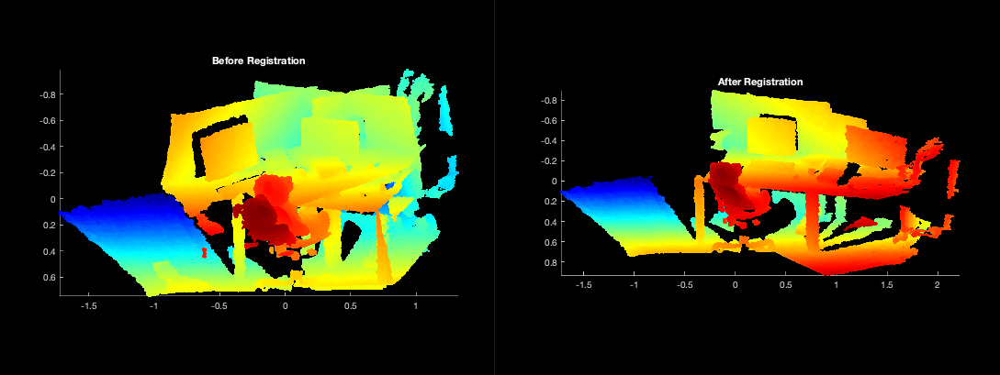
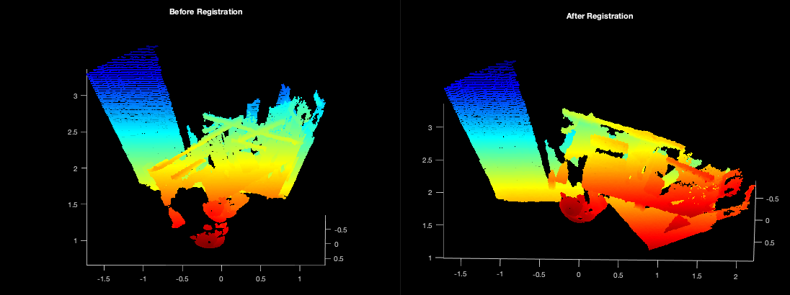
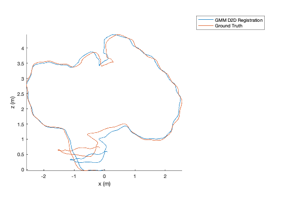
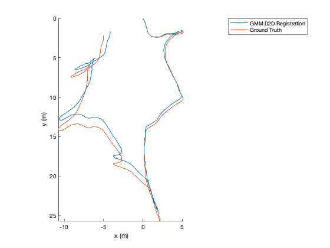
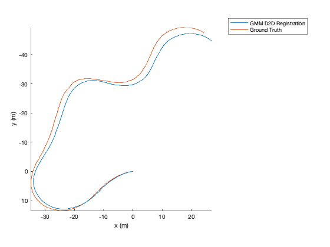
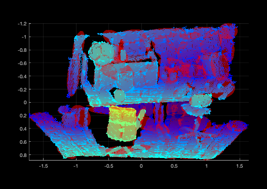

MATLAB¶
Overview¶
The following packages are used for the MATLAB tutorial: gmm_d2d_registration_matlab, gmm_d2d_registration_examples, and gmm.
The gmm_d2d_registration_examples package contains MATLAB scripts
for registering a single pair of GMMs. It also contains scripts for
processing entire datasets.
Initialize the MATLAB Environment¶
The tutorial uses mtimesx, which is compiled and build in the set of
dry packages. A shared library is created and installed in the
dry/install directory. In order to load this library properly, you
will need to run the workon script to find it and add its containing
directory to the MATLAB path. To do this use the included workon.m
file. This file also adds the matlab directories containing MATLAB
scripts and functions to the path.
matlab> cd gira3d-registration
matlab> workon
Download Data¶
The data directory contains a script that you will need to execute
in order to download all of the data associated with this tutorial.
shell> pip install gdown
shell> cd gira3d-registration/data
shell> ./download.sh
The complete dataset is quite large so be prepared for this to take some time.
Registering a Pair of GMMs¶
The data directory contains a subdirectory called pair that
contains two example GMMs: source.gmm and target.gmm. In order to
run the GMM registration code, do the following in matlab.
matlab> cd wet/src/gmm_d2d_registration_examples/matlab
matlab> registration_example
Two MATLAB figures will also display with the registration output using the original pointclouds (note: not the GMMs).
 
Detailed Explanation of the Script¶
First, an isoplanar registration is run to overcome local minima:
x_opt = zeros(6,1);
[x_opt, score] = isoplanar_registration(source_file, target_file, zeros(6,1));
x_opt is the registration result consisting.
A refinement step is run using the following function call:
[x_opt, score] = anisotropic_registration(source_file, target_file, x_opt);
The 3x3 rotation matrix and translation vector are extracted using:
Rotation = axang2rotm([x_opt(4:6) / norm(x_opt(4:6)); norm(x_opt(4:6))]');
translation = x_opt(1:3);
An explanation of the visualization is found in in the visualization section.
TUM Registration¶
To run the full TUM registration pipeline with pre-made GMMs, you can
use the script in gmm_d2d_registration_examples/matlab/run_tum_dataset.m.
matlab> run_tum_dataset
The result will be the trajectory generated from frame-to-frame registration with the ground truth plotted on top.

Cave Registration¶
To run the cave dataset with pre-made GMMs, you can use the script in
gmm_d2d_registration_examples/matlab/run_cave_dataset.m.
matlab> run_cave_dataset

Mine Registration¶
To run the cave dataset with pre-made GMMs, you can use the script in
gmm_d2d_registration_examples/matlab/run_mine_dataset.m.
matlab> run_mine_dataset

Closing the loop and using Pose Graphs¶
Software is provided with an example of how to close the loop.
pose_graph_example
The result will be a video that looks like the following:
where ground truth is in white and the pose graph trajectory is shown in red or purple. Purple means a loop closure constraint was added.
Visualization¶
Scripts are provided to visualize GMMs. A GMM may be visualized by loading from
file and using the plot function in the GMM3.m file. An example is
provided below:
matlab> gmm = GMM3();
matlab> gmm.load('/path/to/data/rgbd_dataset_freiburg3_long_office_household/100_components/1200.gmm');
matlab> gmm.plot([1,0,0]) # Provide color for the GMM using [R, G, B] values between 0 and 1
matlab> pcld = load('/path/to/data/rgbd_dataset_freiburg3_long_office_household/pointclouds/1200.txt');
matlab> hold on; pcshow(pcld); colormap(flipud(jet));

The number of sigmas on the covariance can be adjusted by opening the
GMM3.m script and changing nsigmas. The alpha can be changed by
updating the alpha. The color is supplied in the plot() function
call.
Operating Systems¶
These tutorials have been tested on the following operating systems:
- Ubuntu 20.04
- Ubuntu 18.04